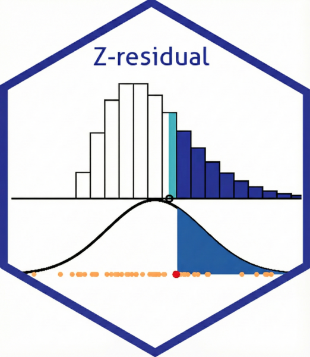

A Shinylive App for Illustrating Z-residuals
2026-09-28
Source:vignettes/articles/illus_zresid.qmd
#| '!! shinylive warning !!': |
#| shinylive does not work in self-contained HTML documents.
#| Please set `embed-resources: false` in your metadata.
#| standalone: true
#| viewerHeight: 820
#| components: [viewer]
library(shiny)
library(ggplot2)
library(cowplot)
col_S <- "#68dbed"; col_U <- "#41b6c4"; col_Z <- "#225ea8"
col_curr <- "#d7191c"; col_past <- "#fdae61"
sel <- function(id, label, choices, selected, width = "100px")
selectInput(id, label, choices, selected, selectize = FALSE, width = width)
ui <- fluidPage(
if (exists("useBusyIndicators")) useBusyIndicators(spinners = FALSE, pulse = FALSE),
tags$head(tags$style(HTML("
.recalculating { opacity:1 !important; transition:none !important; }
.recalculating::after { display:none !important; }
.ctrl { background:#f5f7fa; border:1px solid #d5dbe3; border-radius:6px;
padding:6px 12px 2px 12px; margin-bottom:6px; }
.ctrl .form-group { display:flex; align-items:center; gap:6px; margin:0 0 4px 0; width:auto !important; }
.ctrl label.control-label { margin:0; font-weight:normal; white-space:nowrap; min-width:92px; }
.ctrl select, .ctrl input[type=number] { height:26px; padding:1px 4px; font-size:13px; }
.ctrl .checkbox { margin:0 0 4px 0; }
.ctrl h5 { margin:0 0 4px 0; font-weight:bold; font-size:13px; color:#555; }
.ctrl .btn { width:40px; height:34px; margin:0 4px 4px 0; padding:0; font-size:16px; line-height:1; }
.ctrl .irs { width:100%; }
.ctrl .i-slider .form-group { display:block; }
.ctrl .i-slider label.control-label { display:none; }
.ctrl .inline-row { display:flex; align-items:center; gap:10px; }
.ctrl .inline-row .checkbox { margin:0; }
.ctrl select:disabled { background:#e9ecef; color:#888; cursor:not-allowed; }
"))),
## "True = Wrong" locks the postulated mean to the true mean
tags$script(HTML("
$(document).on('change', '#same', function() {
$('#mu_post').prop('disabled', this.checked);
});
")),
div(class = "ctrl",
fluidRow(
column(5, h5("NB Model"),
sel("size", "Dispersion", c(1, 2, 5, 10, 20, 50), 5),
sel("mu_true", HTML("True μ"), seq(0.5, 15, by = 0.5), 2),
div(class = "inline-row",
sel("mu_post", HTML("Postulated μ"), seq(0.5, 15, by = 0.5), 5),
checkboxInput("same", "Use True Model", FALSE))),
column(3, h5("Animation"),
sel("n_sim", "Observations", c(10, 20, 50, 100, 200), 50),
sel("speed", "Speed", c("Slow" = 2, "Normal" = 1.2, "Fast" = 0.6, "Very fast" = 0.2), 1.2),
numericInput("seed", "Seed", 2026, width = "100px")),
column(4, h5("Play"),
actionButton("play", "\u25B6", class = "btn-primary", title = "Play"),
actionButton("pause", "\u23F8", title = "Pause"),
actionButton("stop", "\u23F9", title = "Stop and go back to the first observation"),
actionButton("nxt", "\u203A", title = "Next observation"),
actionButton("end", "\u00BB", title = "Jump to the last observation"),
div(class = "i-slider", sliderInput("i", "i", 1, 50, 1, step = 1)))
)
),
plotOutput("plot", height = "600px")
)
server <- function(input, output, session) {
mu_true <- reactive(as.numeric(input$mu_true))
size <- reactive(as.numeric(input$size))
n_sim <- reactive(as.numeric(input$n_sim))
speed <- reactive(as.numeric(input$speed))
running <- reactiveVal(FALSE)
cur <- reactiveVal(1)
## Values pushed to the slider by the server come back as input$i a moment
## later. Those echoes must be ignored, or a stale one (e.g. from a play
## step) overrides a later jump such as "End".
sent <- integer(0)
set_i <- function(v) {
v <- max(1, min(v, n_sim()))
cur(v)
if (!identical(isolate(input$i), v)) {
sent <<- c(sent, v)
updateSliderInput(session, "i", value = v)
}
}
observeEvent(input$i, {
k <- match(input$i, sent)
if (!is.na(k)) sent <<- sent[-seq_len(k)] # echo of a server update
else { running(FALSE); cur(input$i) } # user dragged the slider
})
observeEvent(input$n_sim, {
updateSliderInput(session, "i", max = n_sim(), value = min(cur(), n_sim()))
cur(min(cur(), n_sim()))
})
## "True = Wrong": postulated mean follows the true mean
observe({
if (isTRUE(input$same)) updateSelectInput(session, "mu_post", selected = input$mu_true)
})
mu_post <- reactive(if (isTRUE(input$same)) mu_true() else as.numeric(input$mu_post))
observeEvent(input$play, {
if (cur() >= n_sim()) set_i(1)
running(TRUE)
})
observeEvent(input$pause, running(FALSE))
observeEvent(input$nxt, { running(FALSE); set_i(cur() + 1) })
observeEvent(input$end, { running(FALSE); set_i(n_sim()) })
observeEvent(input$stop, { running(FALSE); set_i(1) })
observe({
if (running()) {
invalidateLater(speed() * 1000, session)
isolate({
if (cur() >= n_sim()) running(FALSE) else set_i(cur() + 1)
})
}
})
sim <- reactive({
set.seed(input$seed)
n <- n_sim(); sz <- size()
y <- rnbinom(n, mu = mu_true(), size = sz)
u <- runif(n)
S <- pnbinom(y, mu = mu_post(), size = sz, lower.tail = FALSE)
p <- dnbinom(y, mu = mu_post(), size = sz)
rsp <- S + u * p
data.frame(id = 1:n, y = y, u = u, S_y = S, p_y = p, rsp = rsp, z = qnorm(1 - rsp))
})
output$plot <- renderPlot({
d <- sim()
i <- min(cur(), nrow(d))
mu_true <- mu_true(); mu_post <- mu_post(); sz <- size()
curr <- d[i, ]; past <- d[1:i, ]; past_o <- past[past$id != i, ]
## ---- grid for the NB distributions
xmax <- ceiling(max(qnbinom(0.995, mu = mu_true, size = sz),
qnbinom(0.995, mu = mu_post, size = sz), curr$y)) + 2
x_nb <- 0:xmax
df_post <- data.frame(x = x_nb, prob = dnbinom(x_nb, mu = mu_post, size = sz))
df_true <- data.frame(x = x_nb, prob = dnbinom(x_nb, mu = mu_true, size = sz))
x_norm <- seq(-6, 6, length.out = 500)
df_norm <- data.frame(x = x_norm, dens = dnorm(x_norm))
## ---- A. NB plot
shade_S <- df_post[df_post$x > curr$y, ]
rect_U <- data.frame(xmin = (curr$y + 0.5) - curr$u, xmax = curr$y + 0.5, ymin = 0,
ymax = dnbinom(curr$y, mu = mu_post, size = sz))
## centre the x-axis on the postulated mean so it lines up with z = 0 below;
## the half-width is fixed over all observations so the axis does not jump
xc <- mu_post
half <- max(xc + 0.5, max(d$y) + 1 - xc,
qnbinom(0.995, mu = mu_true, size = sz) - xc,
qnbinom(0.995, mu = mu_post, size = sz) - xc)
xlim_top <- c(xc - half, xc + half)
ylim_top <- c(0, max(df_true$prob, df_post$prob) * 1.1)
## PMF step lines over the whole x-range, including the zero parts,
## so both curves drop to the x-axis at y = -0.5 and in the right tail
x_step <- floor(xlim_top[1]):(ceiling(xlim_top[2]) + 1)
step_post <- data.frame(x = x_step, prob = dnbinom(x_step, mu = mu_post, size = sz))
step_true <- data.frame(x = x_step, prob = dnbinom(x_step, mu = mu_true, size = sz))
step_post$xs <- step_true$xs <- pmin(pmax(x_step - 0.5, xlim_top[1]), xlim_top[2])
common_margin <- theme(plot.margin = unit(c(0.2, 0.5, 0.2, 0.5), "cm"))
## stack y_1..y_i as dots; a column that would rise above the PMF curves
## at that value shrinks its dots so the stack stays under the curves
H <- session$clientData$output_plot_height
if (is.null(H) || H <= 0) H <- 600
px_unit <- (H * 1.2 / 2.2 - 80) / ylim_top[2] # approx. panel pixels per unit of probability
d0 <- 8 / px_unit # diameter of a full-size dot (about 8 px)
env <- pmax(dnbinom(past$y, mu = mu_true, size = sz), dnbinom(past$y, mu = mu_post, size = sz))
cnt <- ave(past$id, past$y, FUN = length)
step <- pmin(d0, env / cnt)
past$ypos <- step * (ave(past$id, past$y, FUN = seq_along) - 0.5)
past$dsize <- 2 * step / d0
curr_pos <- past[past$id == i, ]
p_nb <- ggplot() +
geom_rect(data = shade_S, aes(xmin = x - 0.5, xmax = x + 0.5, ymin = 0, ymax = prob, fill = "S")) +
geom_rect(data = rect_U, aes(xmin = xmin, xmax = xmax, ymin = ymin, ymax = ymax, fill = "U")) +
geom_step(data = step_post, aes(x = xs, y = prob, linetype = "Postulated"), direction = "hv", color = "black", linewidth = 1.2) +
geom_step(data = step_true, aes(x = xs, y = prob, linetype = "True"), direction = "hv", color = "black", linewidth = 0.8) +
geom_point(data = past, aes(x = y, y = ypos, size = dsize), color = "black") +
geom_point(data = curr_pos, aes(x = y, y = ypos), shape = 1, size = 3, stroke = 1.5, color = col_curr) +
scale_size_identity() +
scale_fill_manual(name = NULL, values = c("S" = col_S, "U" = col_U),
labels = c("S" = expression(S[i](y[i])), "U" = expression(U[i] %*% p[i](y[i])))) +
scale_linetype_manual(name = NULL, values = c("True" = "solid", "Postulated" = "dashed")) +
scale_x_continuous(breaks = seq(0, 200, by = 2), expand = c(0, 0)) +
scale_y_continuous(expand = c(0, 0)) +
coord_cartesian(xlim = xlim_top, ylim = ylim_top, clip = "off") +
labs(title = bquote(paste("NB (True ", mu == .(mu_true), ", Post. ", mu == .(mu_post), "): ", y[i] == .(curr$y), ", RSP = ", .(round(curr$rsp, 3)))),
y = "Probability", x = expression(y[i])) +
theme_minimal() + common_margin +
theme(legend.position = c(0.9, 0.95), legend.justification = c(0, 1),
legend.background = element_rect(fill = "white", color = NA), legend.box = "vertical")
## ---- B. Z plot
shade_norm <- df_norm[df_norm$x >= curr$z, ]
p_z <- ggplot() +
geom_line(data = df_norm, aes(x = x, y = dens)) +
geom_area(data = shade_norm, aes(x = x, y = dens), fill = col_Z) +
geom_point(data = past_o, aes(x = z, y = 0), color = col_past, size = 2) +
geom_point(aes(x = curr$z, y = 0), color = col_curr, size = 4) +
coord_cartesian(xlim = c(-3, 3), ylim = c(0, 0.45), clip = "off") +
labs(title = bquote(paste("Standard Normal: ", z[i] == .(round(curr$z, 2)))),
y = "Density", x = expression(z[i])) +
theme_minimal() + common_margin
aligned <- align_plots(p_nb, p_z, align = "v", axis = "lr")
plot_grid(aligned[[1]], aligned[[2]], ncol = 1, rel_heights = c(1.2, 1))
}, res = 96)
}
shinyApp(ui, server)What does this App Show
A Z-residual turns each observation y_i into a number z_i on the standard normal scale, using the model’s predictive distribution for y_i. If the model is correct, the z_i behave like a sample from N(0,1); if it is wrong, they drift away from it. The app shows this transformation one observation at a time for count data drawn from a negative binomial (NB) distribution:
- Top panel: each y_i is drawn from the true model (solid line) and stacked as a black dot. The postulated model (dashed line) is the model being checked. The blue area under the postulated PMF to the right of y_i is the RSP, the randomized upper-tail probability of y_i (see Eq. 1 below).
- Bottom panel: the same upper-tail area is marked under the standard normal density. The point where that area begins is the Z-residual z_i (see Eq. 2 below), and the Z-residuals accumulate as orange dots.
Use the control panel to set the true mean (\mu), the postulated mean, the dispersion (NB size), the number of observations, the animation speed and the random seed. Tick True = Postulated to make the postulated mean equal the true mean. Then use the play controls (Play, Pause, Stop, Next and End, or drag the slider) to step through the observations.
- Correct specification: set the postulated mean equal to the true mean (e.g. both =5). The stacked observations (black dots) follow the postulated PMF, and the accumulating Z-residuals (orange dots) follow the standard normal density.
- Misspecification: set them apart (e.g. true \mu=2, postulated \mu=5). The observed y_i tend to be smaller than expected, the RSP values are too large, and the Z-residuals drift to the left, signalling that the model overestimates the mean.
In the top panel, the blue area under the postulated distribution is the RSP (upper-tail area): the survival probability S_i(y_i) (dark blue) plus a random fraction U_i of the probability mass p_i(y_i) (light blue).
Z-residuals
The Zresidual package implements diagnostic residuals based on the predictive distribution of each observation. By utilizing the full probabilistic information of the model, the package generates residuals that are approximately normally distributed. This allows for standard diagnostic techniques similar to using Pearson residuals in OLS regression.
RSP
For a given observation y_i, the Randomized Survival Probability (RSP)—also known as the randomized probability integral transform—represents the value of the predictive survival function (upper-tail probability) at y_i, adjusted with a randomization term to ensure continuity for discrete outcomes. It is defined as:
RSP_i(y_i \mid \theta) = S_i(y_i \mid \theta) + U_i \, p_i(y_i \mid \theta) \tag{1}
where S_i and p_i represent the survival function and probability mass function, respectively, derived from the predictive distribution of y_i given covariates \mathbf{x}_i and parameters \theta. U_i \sim \text{Unif}(0,1) is a random uniform variable used to smooth discrete outcomes. Under a correctly specified model—where the observed data y_i arises from the assumed predictive distribution—the RSP follows a \text{Unif}(0,1) distribution.
Z-residual
The Z-residual (aka randomized quantile residual) is derived by transforming the RSP via the inverse survival function of N(0,1):
z_i(y_i \mid \theta) = -\Phi^{-1}\left(RSP_i(y_i \mid \theta)\right)= \Psi^{-1}\left(RSP_i(y_i \mid \theta)\right) \tag{2}
where \Psi^{-1}(p) = -\Phi^{-1}(p) = \Phi^{-1}(1-p) represents the inverse survival function (upper-tailed quantile) of the standard normal distribution N(0,1).
In words, the Z-residual is simply the N(0,1) value that shares the same upper-tail area (RSP) as the observed y_i. This transformation effectively maps any predictive distribution to the standard normal scale while preserving the tail probabilities. If the model is correct, the resulting Z-residuals follow a standard normal distribution.
Intuition: Think of the Z-residual as the distance to the median, but rescaled to account for skewness and smoothed to handle discreteness. This ensures that a residual of +2 always implies the same degree of ‘extremeness’, regardless of the original distribution’s shape.